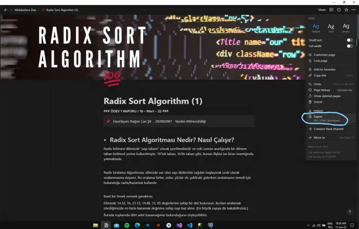
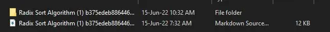
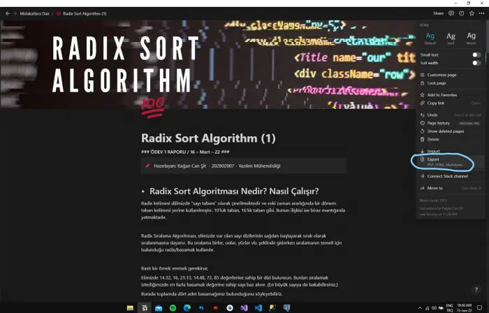
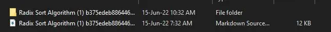

Notion İle Markdown Dosyası Oluşturmak
Haziran 15, 2022
Bugün Notion kullanarak çalışmalarına dair not almayı seven, bu notlarını kolayca GitHub (repository) deposunda sergilemek isteyenler için pratik bir yoldan bahsedeceğim.
GitHub üzerinde (repository) depo açıklamınızı “Markdown&CSV” veya “HTML” yardımıyla yazabilirsiniz. Fakat aldığınız notları herhangi bir tarayıcı üzerinden çevirmek veya elle yeniden düzenlemektense Notion bunun için bir çözüm sunuyor.
Hemen açıklıyorum;
Notion üzerinde projenize ait aldığınız notları, eklediğiniz görsel materyaller de dahil olmak üzere “Markdown&CSV” dosyası olarak çıktı alabilirsiniz. Örnekler ile göstermek gerekirse, aşağıda görselde gözüken Radix Sort Algoritması için aldığım ve kullandığım bir not var.
 



Sağ üst köşede yer alan üç noktaya gelip, “export” seçeneği seçtikten sonra “Markdown&CSV” seçerek istediğiniz bir konuma çıktı alabilir. Daha sonra sıkıştırılmış olan dosya içeriğini açarak tüm içeriğinizin Markdown olarak oluşturulmuş çıktısını alabilirsiniz.
Oluşan Markdown dosyasınızı yeniden isimlendirerek(Readme.md) GitHub (repository) deponuz içerisine kaydetmeniz yeterli. Bu sayede notlarınızı rahatça sergileyebilirsiniz.
Örneğin örnek verdiğim görsel içerisinde yer alan nota ait olan GitHub Repository adresim; KaganCanSit/RadixSortAlgorithm: An example of performing radix sort by reading data from the file with the Radix Sort algorithm. (github.com)
Fakat şunu belirtmem gerek dışarıdan eklenen ve dahil edilmiş görsel içerikler ayrı bir dosyada çıktı olarak verilir. Bu görsellerin erişim adreslerini, görsel içerikleri GitHub veya farklı bir platforma yükleyerek güncellemelisiniz.
Yine de sıfırdan Markdown dosyası yazmaktan hızlı ve not tutma alışkanlığınız varsa pratik bir çözüm. Aynı yöntemi kullanarak var olan belgelerinizi PDF uzantılı kaydedebilir. Ödev ve sunumlarınızda kullanabilirsiniz.
Umarım işinize yarar. Sağlıcakla kalın.
Terimler;
Repository | Bir yazılım havuzu veya kısaca repo, yazılım paketleri için bir depolama yeridir.
Markdown | Markdown, düz-metin-biçimlendirme sözdizimine sahip hafif bir işaretleme dili.
CSV | Virgülle ayrılmış değerler dosyası, değerleri ayırmak için virgül kullanan sınırlandırılmış bir metin dosyasıdır.
HTML | Hiper Metin İşaretleme Dili web sayfalarını oluşturmak için kullanılan standart metin işaretleme dilidir.